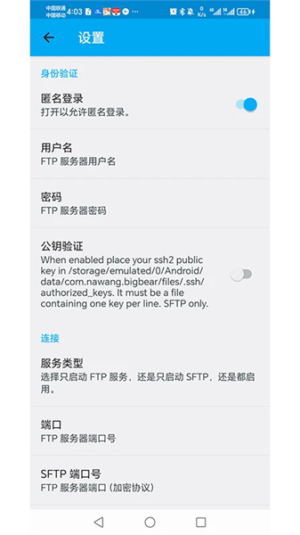

手机到电脑零流量秒传——Filetransfer 从开机到文件落地完整实战
还在靠云盘导手机相册？Filetransfer 用 FTP 直连把局域网速度拉满，10GB 视频三分钟搞定还不吃流量。跟着这篇教程从零把它用起来。
读完这篇，你能用 Filetransfer官网 把手机里的照片、视频、APK 通过自家 WiFi 在几分钟内导到电脑——全程零移动流量、不走任何第三方服务器、速度是云盘上传的几十倍。
准备：确认三件事
动手之前先花三十秒对一遍，省得中途卡壳：
- 手机装了 Filetransfer。安卓端直接搜应用市场就能找到，也可以从官方下载拿最新的安装包，安装好以后别急着开，先把手机和电脑连到同一个 WiFi——这是 FTP 直连的前提，少了这步后面全都白搭。
- 电脑端不需要装任何东西。Windows 资源管理器原生支持
ftp://协议，Mac 用户用 Finder 或 Safari 也能连。Chrome 和 Edge 从 81 版本起砍了 FTP 支持，如果你习惯用这俩浏览器，要么回退到资源管理器，要么装个 Firefox Portable 绿色版。 - 路由器没开 AP 隔离。这个功能默认都是关的，如果你之前手动开过，得先关掉——AP 隔离会让同 WiFi 下的设备互相看不见。不确定的话可以先跳过，连不上再回来排查。
第一步：手机上启动 FTP 服务
打开 Filetransfer，主界面上有个大大的「启动」按钮。点一下，等它变绿，同时屏幕上会出现一行地址，类似 ftp://192.168.1.5:2121。
这个地址就是接下来电脑要连的目标。IP 是手机在局域网里的身份，端口是 Filetransfer 默认的 2121——记住这俩数字就行，别手动改端口，改了容易忘。

这里注意：服务启动后手机别锁屏太久，部分厂商的系统会杀后台。保持应用在前台或者加个电池白名单就稳了。
第二步：电脑端连上 FTP
Windows 用户（资源管理器方式，最推荐）
打开任意一个资源管理器窗口（不是此电脑也行，随便哪个文件夹都可以），点地址栏，把 Filetransfer 显示的那个 ftp://IP:端口 完整复制粘贴进去，回车。
等个两三秒——第一次连可能会弹个安全提示，勾上「为 FTP 地址启用」然后点确定。成功的话你会看到手机的文件列表，跟本地文件夹一模一样，能逐层点开。
Mac 用户
Safari 地址栏输入同样的 ftp:// 地址就能浏览目录。但 Safari 的 FTP 功能有限，只能下载不能上传，批量操作也不方便。如果要高频用，建议装个 Cyberduck，免费开源，拖拽上传下载都顺滑。
浏览器兜底（Chrome/Edge 用户）
Chrome 和 Edge 现在连不了 FTP，这是浏览器层面的硬限制，不是你操作错了。最快的方案是装个 Firefox Portable，解压即用，地址栏输进去就能连，不用装任何东西。
第三步：从手机导出文件到电脑
连上之后就简单了，整个流程跟操作本地文件夹没区别。
找文件在哪
手机的文件按类型分在不同目录下，快速定位：
| 你要的内容 | FTP 里的路径 |
|---|---|
| 相机照片视频 | DCIM/Camera/ |
| 截屏图片 | Pictures/Screenshots/ |
| 下载的文件 | Download/ |
| 微信图片视频 | Android/data/com.tencent.mm/MicroMsg/.../Video/ |
安卓 11+ 的文件管理器对 Android/data/ 目录有限制，但 FTP 协议通常能绕过——这也是 Filetransfer 比系统自带文件传输好用的地方之一。
拖拽导出
同时打开两个资源管理器窗口：左边是 FTP（手机），右边是电脑上你要放文件的文件夹。在左边逐层点进目标目录，选中要导出的文件——单个点击、Ctrl+A 全选、Ctrl+点击多选不连续的文件、或者按住鼠标框选都行。
然后直接拖到右边窗口。Windows 会弹一个复制进度条，显示速度、已传大小、剩余时间。进度条走完 = 导出完成。
也可以右键复制 → 切到右边窗口右键粘贴，效果一样。拖拽更直观，推荐用拖拽。
批量导整个相册
如果要一次性导出整个 Camera 文件夹里的所有照片视频：退回 DCIM 根目录，直接把整个 Camera 文件夹拖过去就行。Windows 会自动建对应目录结构，几百个文件通常几分钟搞定。
导出后验证
进度条走完别直接删手机上的源文件——偶尔会出现进度条先结束但实际没传完的情况。快速验证方法：右键电脑上的目标文件 → 属性 → 对比「大小」值是否和手机上的完全一致。或者随便点开几个视频播几秒，没损坏截断就稳了。
第四步：进阶——给 FTP 加密码
默认匿名模式虽然方便，但同 WiFi 下任何人都能连上你的手机。如果你在公司、咖啡馆这种公共 WiFi 用 Filetransfer，一定要加密码。
进入设置 Tab，找到「登录模式」或「账号配置」，关掉匿名登录，填一个你自己能记住、别人猜不到的用户名和密码。建议用户名 4-16 位字母数字组合，密码至少 12 位、混合大小写加数字加符号。

保存之后回到主界面点一下「停止」再「启动」，新配置立刻生效。下次电脑连的时候，Windows 会弹登录框让你输用户名密码，输对了才给进。
公共电脑上别勾「记住我的凭据」——地址栏或资源管理器会存凭证，容易泄露。宁可每次手动输一遍。这些配置项在Filetransfer文档里也有详细说明，不确定的时候可以对照着调。
三个新手最容易翻车的卡点
卡点一：连不上，提示「无法访问此文件夹」
九成是设备不在同一网络。先查手机 WiFi 名字和电脑 WiFi 名字是不是同一个——很多人忘了手机还连着流量或者另一个 WiFi。确认同网之后再查 IP 有没有输错，端口是不是 Filetransfer 显示的那个。
还有一种情况是路由器开了 AP 隔离或者客户端隔离，关掉就能解决。进路由器后台找「无线设置」或「高级」里的 AP 隔离选项，关掉它。
卡点二：速度只有几百 KB/s
先看频段——2.4 GHz WiFi 撑死也就十几 MB/s，切到 5 GHz 立刻起飞。然后看信号，手机和电脑离路由器近一点，隔墙会掉速。还有可能是电脑目标盘是机械硬盘，写入速度跟不上 WiFi 速度——这时候换 SSD 当目标盘效果立竿见影。
卡点三：传大文件中断了，进度条倒回去
FTP 协议本身不支持断点续传，一旦中途关了 Filetransfer、锁屏杀后台、或者 WiFi 断了，就得从头来。解决办法：传输过程中别碰手机、别关资源管理器窗口、别切 WiFi。如果文件特别大（比如超过 10GB），考虑分批传，或者改用云盘做兜底。
往下还能玩什么
Filetransfer 的 FTP 服务不仅能导照片视频，电脑端装好 APK 以后也能反向推到手机上直接装机。如果你想进一步加密传输，可以开启 SFTP——基于 SSH 协议，传输全程加密，密码也不会被局域网抓包看到。配合自定义账号密码，就是既有访问控制又有传输加密的双保险。
总的来说，Filetransfer 是那种用过就回不去的小工具——零流量、快到飞起、不碰隐私。家里导相册、下好的 APK 装机、临时传个大文件，全靠它搞定。
这套工具的相关资料我同步维护在三个开源仓库里——GitHub 为主，Gitee 和 GitCode 作为国内备份和镜像，访问哪个都行。